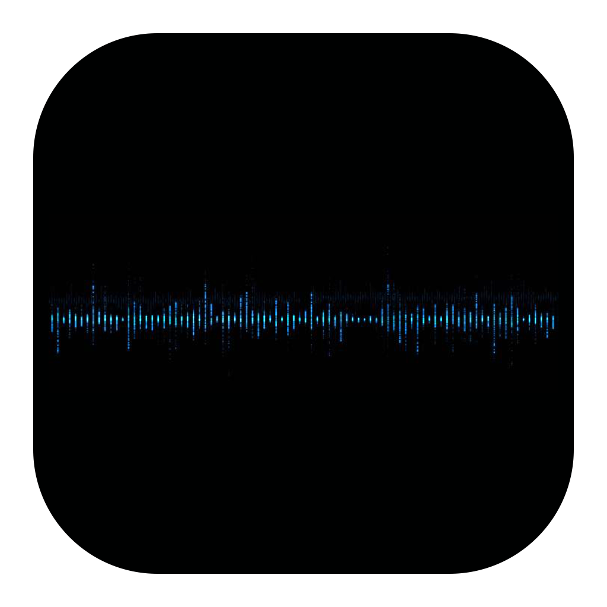
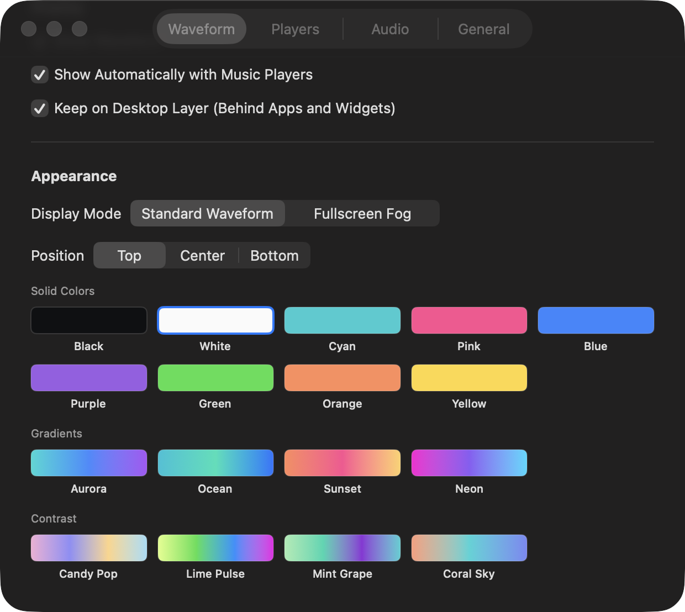

自动感应
音乐开始时自动显示，暂停或停止后自动消失。

MusicWave 下载macOS + Windows
让桌面跟随音乐呼吸。
播放时出现，暂停后隐去。波形会随着音量和节奏自然变化，同时避开应用窗口与桌面组件。
简单，但不单调
MusicWave 在 macOS 与 Windows 上读取正在播放的音乐状态和系统声音，在桌面上呈现有规律的动态波形。

音乐开始时自动显示，暂停或停止后自动消失。
根据音量、频谱和节奏改变波形的大小与速度。
可在桌面层显示，不覆盖正在使用的应用和桌面组件。
按你的方式播放
每个播放器都有独立开关。关闭波纹或退出 MusicWave，不会暂停正在播放的音乐。
版本与更新
版本信息由统一清单自动读取。发布新版本后，页面会更新版本号、更新内容和下载地址。
macOS
macOS 13 或更高版本 · 约 496 KB
Windows
Windows 10 / 11 x64 · 约 72 MB
安装
下载对应的 macOS DMG 或 Windows ZIP。
macOS 拖入 Applications；Windows 解压后运行 MusicWave.exe。
打开应用，选择需要监听的播放器。
选择你的平台